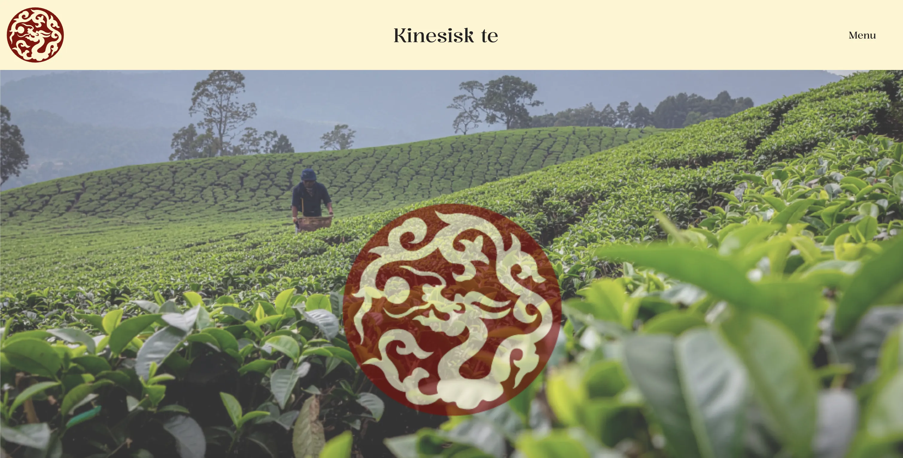

Grundlæggende indhold
I Tema 5 arbejdede jeg med indholdsproduktion til digitale løsninger med fokus på hele processen fra idé og planlægning til produktion og præsentation. Temaet gav mig en grundlæggende forståelse for, hvordan godt indhold understøtter både brugeroplevelse og visuel kommunikation.
Jeg arbejdede med pre produktion, produktion og postproduktion af indhold, herunder fotografering med smartphone, billedredigering i Adobe Photoshop og animeret vektorgrafik med After Effects. Derudover arbejdede jeg med tekst, visuel storytelling og tilpasning af indhold til web.
I dette tema havde vi to opgaver:
Den første var en selvstædigt projekt om vores sandkassesite med fokus på indholdsproduktionen ved hjælp af AI, Adobe photoshop og Adobe illustrator. Hvis du kunne tænke dig at se min løsning af opgaven, kan den ses på billedet, og ved at klikke på linket nedenfor. Vil du lære mere om processen bag hjemmesiden, kan du klikke herunder.
 Se hjemmesiden Se designprocessenDen anden temaopgave var gruppeprojekt der bestod i et redesign af en virksomheds hjemmeside, hvor vi producerede nyt layout, tekst, billeder og animationer til en selvvalgt virksomhed. Her anvendte jeg mine kompetencer fra tidligere temaer inden for UX, UI og frontend til at skabe en samlet, indholdsbaseret løsning. Hvis du kunne tænke dig at se min løsning af opgaven, kan den ses på billedet, og ved at klikke på linket nedenfor. Vil du lære mere om processen bag hjemmesiden, kan du klikke herunder.
 Se hjemmesiden
Se designprocessen
Se hjemmesiden
Se designprocessen